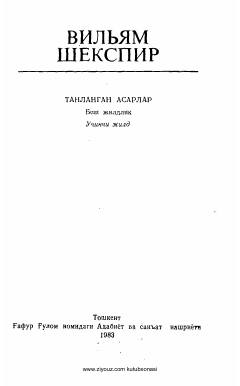

HDaniyalik shahzoda Hamletning fojiali qasos va adolat yo'lidagi kurashi.
Ushbu asar Uilyam Shekspirning mashhur fojiasi bo'lib, Maqsud Shayxzoda tomonidan o'zbek tiliga tarjima qilingan. Kitob Daniya shahzodasi Hamletning otasi o'limi uchun qasos olish yo'lidagi ruhiy iztiroblari va kurashini tasvirlaydi.